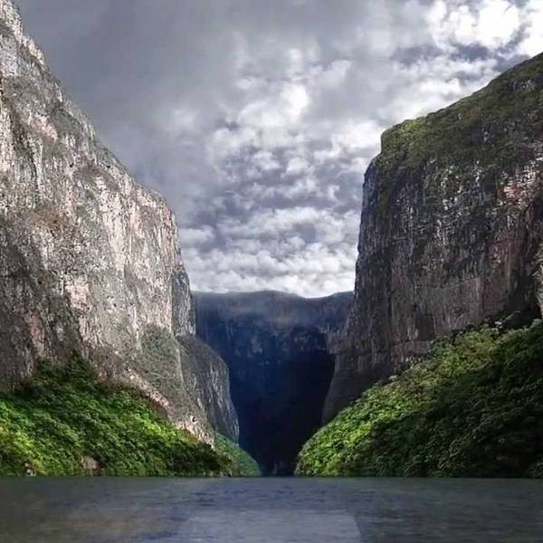

Expertos en viajes

El cañon del sumidero
El Cañón del Sumidero, es un estrecho cañón de gran profundidad situado a 5 km de Tuxtla Gutiérrez capital del estado de Chiapas, México; dentro del municipio de Chiapa de Corzo.
Este cañón tiene un acantilado cuya altura va un poco más allá de los 1,000 msnm y se levanta sobre el cauce del río Grijalva, que tiene una profundidad de más de 250 m . La falla geológica se abrió hace aproximadamente doce millones de años en la Sierra Norte de Chiapas. Tiene muros que se elevan a más de 1,300 m desde la profundidad de la garganta, donde corren las aguas del río Grijalva que atraviesa los estados de Chiapas y Tabasco y desemboca en el golfo de México. En su boca sur, el cañón inicia en Chiapa de Corzo, y desemboca en el embalse artificial de la presa hidroeléctrica Manuel Moreno Torres, conocida popularmente como Presa Chicoasén.
Por su gran riqueza ecológica, el 8 de diciembre de 1980 se declaró como Parque Nacional Cañón del Sumidero con una extensión de 21,789 ha. El 22 de febrero de 2004, el área del parque también fue declarada como sitio Ramsar en México.
La relevancia del Cañón del Sumidero es tal que forma parte del escudo de Chiapas.
Leer mas
Jared Leto
Jared Joseph Leto (Bossier City, Luisiana, Estados Unidos; 26 de diciembre de 1971)1 es un músico multiinstrumentista, actor, director y productor estadounidense, ganador del Oscar, el Globo de oro, el Sag, entre otros premios. También es conocido como director con el nombre de Bartholomew Cubbins, pero es más conocido por ser el vocalista, guitarrista, bajista, pianista, compositor y fundador de la banda de rock alternativo 30 Seconds to Mars.
La Huasteca Potosina
La gran diversidad cultural de la Huasteca Potosina se conserva hasta la actualidad, conformada por importantes grupos de más de 250,000 habitantes que hablan náhuatl, tenek y pame. Estos grupos tienen sus orígenes en la cultura maya de su pasado y los mexicas del Altiplano que intentaron dominarlos. Una de las extraordinarias muestras culturales originarias de la Huasteca Potosina es el huasteco o huapango, música que mezcla violines, guitarras y jaranas.
La Huasteca es una región de México que abarca el norte de Veracruz, el sur de Tamaulipas y partes de los estados de Hidalgo, Puebla, Querétaro y San Luis Potosí. La Huasteca Potosina es el área dentro del estado de San Luis Potosí, abarcando varios municipios, incluyendo a Ciudad Valles, Xilitla, Tamazunchale y Taquín. La Huasteca hace referencia al lugar donde se desarrolló la cultura de los Huastecos.
La Huasteca Potosina es parte de la Sierra Madre Oriental y se localiza en el estado de San Luis Potosí. Posee un rico ecosistema selvático y una belleza natural excepcional con ríos, abismos y cascadas; escenarios perfectos para el turismo de aventura.
Leer mas
Ryan Reynolds
Ryan Rodney Reynolds (Vancouver, Columbia Británica; 23 de octubre de 1976) es un actor canadiense.El éxito y el reconocimiento le llegaron con su participación en la comedia titulada Two Guys and a Girl (1998-2001), antes de que iniciara su carrera de comediante y actor dramático para la industria de cine de Hollywood. En 2010 la revista estadounidense People lo eligió como el hombre más sexy del año